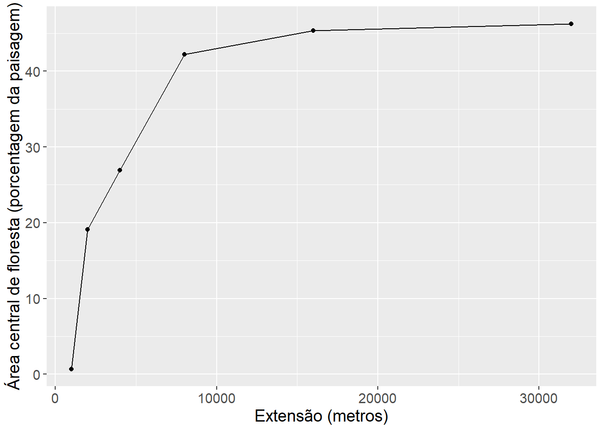

Capítulo 2 Métricas da paisagem
2.1 Apresentação
As métricas da paisagem nos ajudam a entender as mudanças na paisagem de diferentes perspectivas (visual, ecológica, cultural).
Asssim sendo, análises com métricas de paisagem é um atividade fundamental na ecologia da paisagem. Nesta capitulo aprenderemos sobre como analisar a cobertura da terra com métricas de paisagem em R. As tecnicas será ilustrada através cálculos usando a cobertura florestal ao redor do Rio Araguari. Ao longo do caminho, revisaremos modelos lineares e não lineares, aprenderemos sobre manipulação de dados em R e aprenderemos como criar gráficos com o pacote ggplot2.
No capitulo você aprenderá a:
Importar e plotar dados raster em R e mapear locais de amostragem com os pacotes terra, sf e tmap.
Calcular métricas de paisagem com o pacote landscapemetrics.
Calcular métricas de paisagem em locais de amostragem e dentro de um buffer ao redor deles (comparação multiescala).
Construir gráficos com o pacote ggplot2.
Comparação de padrões lineares e não-lineares.
2.2 Métricas da paisagem e pacote “landscapemetrics”
As métricas de paisagem são a forma que os ecólogos de paisagem usam para descrever os padrões espaciais de paisagens para depois avaliar a influência destes padrões espaciais nos padrões e processos ecológicos.
landscapemetrics tem funções para calcular métricas de paisagem em paisagems categóricos (onde tem uma classificação de cobertura de terra/habitat - modelo mancha-corredor-matriz), em um fluxo de trabalho organizado. O pacote pode ser usado como um substituto do FRAGSTATS (McGarigal et al. 1995, https://doi.org/10.2737/PNW-GTR-351), pois oferece um fluxo de trabalho reproduzível para análise de paisagem em um único ambiente (Professor McGarigal se aposentou, então FRAGSTATS não é mais apoiado). landscapemetrics também permite cálculos de quatro métricas teóricas de complexidade da paisagem: entropia marginal, entropia condicional, entropia conjunta e informação mútua (Nowosad e Stepinski 2019 https://doi.org/10.1007/s10980-019-00830-x).
2.2.1 Pacotes
Além do “landscapemetrics”, precisamos carregar alguns pacotes a mais para facilitar a organização e apresentação de dados espaciais (vector e raster) e os resultados.
Carregar pacotes (que deve esta instalado antes):
library(tidyverse)
library(sf)
library(raster)
library(terra)
library(tmap)
library(gridExtra)
library(kableExtra)
library(mgcv)Agora, digite o código abaixo e veja o resultado. Leia com atenção e preste particular atenção na organização da página de ajuda.
library(landscapemetrics)
?landscapemetricsNo final da página você vai encontrar a palavra “Index”. Clique nela e você verá todas as funções do pacote. Desca até as lsm_. . . e clique em algumas delas ali. Explorar! Para listar todas as métricas disponíveis, você pode usar a função list_lsm() . A função também permite mostrar métricas filtradas por nível, tipo ou nome da métrica. Para obter mais informações sobre as métricas, consulte os arquivos de ajuda correspondentes ou https://r-spatialecology.github.io/landscapemetrics.
Digite o código abaixo e veja o resultados, mostrando exemplos das métricas diferentes.
# métricas de agregação, nível de fragmento
landscapemetrics::list_lsm(level = "patch", type = "aggregation metric")
# métricas de agregação, nível de classe
landscapemetrics::list_lsm(level = "class", type = "aggregation metric")
#
landscapemetrics::list_lsm(metric = "area")
# ajudar com opções da função
?landscapemetrics::list_lsmNesse pacote o formato geral para uma função é o seguinte “lsm_nível_métrica”:
A primeira parte é sempre lsm_ (“landscapemetric”), seguinda do “nível_” e por fim a “métrica”. Ou seja, todas as funções que calculam métricas começam com lsm_ …….
Daí você deve incluir o nível da análise “p” para patch (ou seja, para a mancha/fragmento), “c” para classe e “l” para landscape ou seja, métricas para a paisagem como um todo.
E daí existem inúmeras métricas, como por exemplo a cpland que é o percentual de área central - “core area” na paisagem, como vimos na aula teórica. Assim sendo, a função lsm_c_cpland vai calacular a métrica porcentagem da área central em cada classe. Lembrando existem metricas que podem se calculados nos trés niveis, e metricas que so pode se calculados somente para um nivel espcifco.
Digite o código abaixo e veja o resultados, mostrando exemplos das métricas diferentes.
# ajudar com opções para uma função especifica
?landscapemetrics::lsm_c_cpland2.3 Dados
Existem varios formas de importar e exportar dados geoespaciais. Aqui, precisamos o arquivo com os dados de MapBiomas “utm_cover_AP_rio_2020.tif”, que voces baixaram no tutorial anterior (tutorial Escala https://rpubs.com/darren75/escala).
Lembrando-se de salvar o arquivo (“utm_cover_AP_rio_2020.tif”) em um local conhecido no seu computador. Agora, nós podemos carregar os dados de cobertura da terra “utm_cover_AP_rio_2020.tif” com a função rast.
# Selecionar e carregar arquivo "utm_cover_AP_rio_2020.tif"
mapbiomas_2020 <- rast(file.choose())
# Reclassificação -
# Criar uma nova camada de floresta (novo objeto de raster copiando mapbiomas_2020,
# assim para ter os mesmos coordenados, resolução e extensão)
floresta_2020 <- mapbiomas_2020
# Todos os pixels com valor de 0
values(floresta_2020) <- 0
# Atualizar com valor de 1 quando pixels originais são de floresta (classe 3 e 4)
floresta_2020[mapbiomas_2020==3 | mapbiomas_2020==4] <- 1 Plotar para verificar, incluindo nomes e os cores para classes de floresta (valor = 1) e não-floresta (valor = 0).
# Passo necessario para agilizar o processamento
floresta_2020_modal<-aggregate(floresta_2020, fact=10, fun="modal")
# Plot
tm_shape(floresta_2020_modal) +
tm_raster(style = "cat",
palette = c("0" = "#E974ED", "1" ="#129912"), legend.show = FALSE) +
tm_add_legend(type = "fill", labels = c("não-floresta", "floresta"),
col = c("#E974ED", "#129912"), title = "Classe") +
tm_layout(legend.bg.color = "white")Se esta todo certo, voces devem ter uma imagem assim:
Figura 2.1: Floresta ao redor do Rio Araguari. MapBiomas 2020 reclassificado em floresta e não-floresta.
2.3.1 Exibir dados raster e sobreposição com locais de amostragem
Agora temos a paisagem, precisamos tambem os pontos de amostra. Por isso, precisamos carregar os dados de rios e pontos de amostragem que usamos no tutorial Escala - arquivo “rivers.GPKG”. Vamos carregar as camadas que voces baixaram no tutorial anterior. Baixar o arquivo Link: https://github.com/darrennorris/gisdata/blob/master/inst/vector/rivers.GPKG . Lembrando-se de salvar o arquivo (“rivers.GPKG”) em um local conhecido no seu computador.
Agora, com o proximo bloco de codigo, podemos selecionar o arquivo “rivers.GPKG”, e carregar primeiramente a camada “midpoints” e depois “centerline”.
No exemplo, usamos %>%, que estabelece a ligação entre os passos do processo. Ou seja, %>% passa o objeto resultante automaticamente para a próxima função como primeiro argumento. Primeiramente carregamos os dados e em seguida converter (reprojeção) as coordenadas para o mesmo sistema de referência que o arquivo raster (com a função st_transform).
# Selecionar o arquivo "rivers.GPKG",
meuSIG <- file.choose()
# Carregar pontos cada 5 km, camada midpoints
rsm_31976 <- sf::st_read(meuSIG, layer = "midpoints") %>%
st_transform(31976)
# Carregar linha central de rios, camada centerline
rsl_31976 <- sf::st_read(meuSIG, layer = "centerline") %>%
st_transform(31976) Visualizer para verificar.
# Passo necessario para agilizar o processamento
floresta_2020_modal<-aggregate(floresta_2020, fact=10, fun="modal")
# Plot
tm_shape(floresta_2020_modal) +
tm_raster(style = "cat",
palette = c("0" = "#E974ED", "1" ="#129912"), legend.show = FALSE) +
tm_add_legend(type = "fill", labels = c("não-floresta", "floresta"),
col = c("#E974ED", "#129912"), title = "Classe") +
tm_shape(rsl_31976) +
tm_lines(col="blue") +
tm_shape(rsm_31976) +
tm_dots(size = 0.2, col = "yellow") +
tm_layout(legend.bg.color="white")Depois de executar (“run”) o código acima, você deverá ver a figura a seguir.
Figura 2.2: Cobertura da terra ao redor do Rio Araguari em 2020. Mostrando os pontos de amostragem (pontos amarelas) cada 5 quilômetros ao longo do rio (linha azul).
2.4 Calculo de métricas
Para ilustrar como rodar as funções e cálculos com landscapemetrics, vamos calcular a área central na paisagem. Vamos estudar uma classe (floresta), portanto vamos incluir as métricas para nível de classe. Além disso, as métricas de paisagem em nível de classe são mais eficazes na definição de processos ecológicos (Tischendorf, L. Can landscape indices predict ecological processes consistently?. Landscape Ecology 16, 235–254 (2001). https://doi.org/10.1023/A:1011112719782.).
Para calcular as métricas de paisagem dentro de um certo buffer em torno de pontos de amostra, existe a função sample_lsm(). Através da função sample_lsm() podemos calcular mais de 50 métricas da paisagem, dentro de extensões (raios/distancias) diferentes.
2.4.1 Ponto único, raio único, métrica única
Métricas de área central (“core area”) são consideradas medidas da qualidade de hábitat, uma vez que indica quanto existe realmente de área efetiva de um fragmento, após descontar-se o efeito de borda. Vamos calcular a percentual de área central (“core area”) no entorno de um ponto de amostragem. Isso seria, a percentual de áreas centrais (excluídas as bordas de 30 m) de cada classe em relação à área total da paisagem.
Para a função sample_lsm() funcionar, precisamos informar (i) a paisagem (arquivo de raster), (ii) ponto (arquivo vector), (iii) raio, (iv) forma do buffer (círculo ou quadrado) e por final (v) a métrica desejada. Cada opção tem especificações particulares assim para que a função pode receber dados em formatos diferentes e produzir resultados confiorme necessidades de diversos casos.
minha_amostra_1000 <- sample_lsm(landscape = floresta_2020,
y = rsm_31976[1, ],
size = 1000, shape = "circle",
metric = "cpland",
edge_depth = 1) Depois que executar (“run”), podemos olhar os dados com o codigo a seguir. Os dados deve ter os valores (coluna value) da métrica (coluna metric) de cada classe (coluna class):
minha_amostra_1000| layer | level | class | id | metric | value | plot_id | percentage_inside |
|---|---|---|---|---|---|---|---|
| 1 | class | 0 | NA | cpland | 66.94191 | 1 | 99.9608 |
| 1 | class | 1 | NA | cpland | 19.07745 | 1 | 99.9608 |
2.4.1.1 Pergunta 2
O modelo mancha-corredor-matriz é frequentemente adotado na ecologia da paisagem. Com base nas aulas teóricas e usando os valores no objeto minha_amostra_1000 apresentados na tabela acima, identificar qual classe representar a matriz na paisagem. Há alguma informação faltando que limita a sua capacidade de identificar qual classe representar a matriz? Se sim, o que precisa ser adicionado? Justifique as suas respostas de forma clara e concisa.
2.4.2 Ponto único, distâncias variados, métrica única
Figura 2.3: Cobertura florestal em extensões diferentes ao redor de um ponto de amostragem.
Para uma comparação multiescala, vamos calcular a mesma métrica, no mesmo ponto, mas agora com extensões diferentes. Continuando o exemplo no tutorial anteriio (Escala), vamos repetir o mesmo processo, mas agora com raios de 250, 500, 1000, 2000, 4000, 8000 e 16000 metros, doubrando a escala (extensão) em cada passo.
Para obter resultados com extensões diferentes, precisamos primeiramente repetir o código, ajustando para cada extensão, e depois juntar os resultados. O código a seguir calculará a mesma métrica para as diferentes distâncias. No exemplo, usamos %>%, que estabelece a ligação entre os passos do processo. Neste caso, para incluir uma coluna nova (raio) para manter o valor das diferentes distâncias.
# raio 250 metros
sample_lsm(floresta_2020, y = rsm_31976[1, ],
size = 250, shape = "circle",
metric = "cpland") %>%
mutate(raio = 250) -> minha_amostra_250
# raio 500 metros
sample_lsm(floresta_2020, y = rsm_31976[1, ],
size = 500, shape = "circle",
metric = "cpland") %>%
mutate(raio = 500) -> minha_amostra_500
# raio 1 km (1000 metros)
sample_lsm(floresta_2020, y = rsm_31976[1, ],
size = 1000, shape = "circle",
metric = "cpland") %>%
mutate(raio = 1000) -> minha_amostra_1000
# raio 2 km
sample_lsm(floresta_2020, y = rsm_31976[1, ],
size = 2000, shape = "circle",
metric = "cpland") %>%
mutate(raio = 2000) -> minha_amostra_2000
# raio 4 km
sample_lsm(floresta_2020, y = rsm_31976[1, ],
size = 4000, shape = "circle",
metric = "cpland") %>%
mutate(raio = 4000) -> minha_amostra_4000
# raio 8 km
sample_lsm(floresta_2020, y = rsm_31976[1, ],
size = 8000, shape = "circle",
metric = "cpland") %>%
mutate(raio = 8000) -> minha_amostra_8000
# raio 16 km
sample_lsm(floresta_2020, y = rsm_31976[1, ],
size = 16000, shape = "circle",
metric = "cpland") %>%
mutate(raio = 16000) -> minha_amostra_16000E agora, o código a seguir juntará os resultados das diferentes extensões.
bind_rows(minha_amostra_250,
minha_amostra_500,
minha_amostra_1000,
minha_amostra_2000,
minha_amostra_4000,
minha_amostra_8000,
minha_amostra_16000) -> amostras_metricaDepois que executar (“run”), podemos olhar os dados “amostras_metrica” com o codigo a seguir.
amostras_metrica| layer | level | class | id | metric | value | plot_id | percentage_inside | raio |
|---|---|---|---|---|---|---|---|---|
| 1 | class | 0 | NA | cpland | 79.4 | 1 | 99 | 250 |
| 1 | class | 0 | NA | cpland | 86.9 | 1 | 100 | 500 |
| 1 | class | 1 | NA | cpland | 0.7 | 1 | 100 | 500 |
| 1 | class | 0 | NA | cpland | 66.9 | 1 | 100 | 1000 |
| 1 | class | 1 | NA | cpland | 19.1 | 1 | 100 | 1000 |
| 1 | class | 0 | NA | cpland | 57.6 | 1 | 100 | 2000 |
| 1 | class | 1 | NA | cpland | 26.9 | 1 | 100 | 2000 |
| 1 | class | 0 | NA | cpland | 36.2 | 1 | 100 | 4000 |
| 1 | class | 1 | NA | cpland | 42.2 | 1 | 100 | 4000 |
| 1 | class | 0 | NA | cpland | 35.8 | 1 | 100 | 8000 |
| 1 | class | 1 | NA | cpland | 45.4 | 1 | 100 | 8000 |
| 1 | class | 0 | NA | cpland | 37.1 | 1 | 100 | 16000 |
| 1 | class | 1 | NA | cpland | 46.3 | 1 | 100 | 16000 |
2.4.2.1 Faça um gráfico

Uma imagem vale mais que mil palavras. Portanto, gráficos/figuras/imagens são uma das mais importantes formas de comunicar a ciência. Os dados apresentados em uma tabela podem ser difíceis de entender. Portanto, a primeira pergunta que você deve se fazer é se você pode transformar aquela tabela (chata e feia) em algum tipo de gráfico. Lembrando, sempre pode incluir a tabela como anexo.
Aqui, vamos fazer um grafico com os dados amostras_metrica, usando o pacote ggplot2.
O ggplot2 faz parte do conjunto de pacotes tidyverse, e é um pacote de visualização de dados. “gg” se refere a uma gramática de gráficos. A ideia principal é criar um gráfico como se fosse uma frase, onde cada elemento do gráfico seria uma palavra, organizados em uma sequencia logica para construir uma frase completo (gráfico final). Você fornece os dados, informa ao ggplot2 como mapear variáveis para estética, quais tipos/formatos gráficas usar e ele cuida dos detalhes.
Isto nos permite construir gráficos tão complexos quanto quisermos. Os gráficos criados com ggplot2 são, em geral, mais elegantes do que os gráficos tradicionais do R. Para mais exemplos e tutoriais com mais detalhes veja os capitulos sobre ggplot2 nos livros:
No livro em ingles R Graphics Cookbook .
E sempre pode buscar exemplos no Google, por exemplo digitando: ggplot2 grafico de barra no Google, tem mais de 50 mil resultados com paginas de imagens, codigo pronto e exemplos no YouTube.
O ggplot2 exige que os dados a serem plotados estejam em um “dataframe” (tabela de dados). Ou seja, sempre teremos que transformar os dados para dataframe ou construir um dataframe com os dados que possuímos. Dataframe é um formato comum e fácil de trabalhar. Por exemplo, se você importar uma planilha de dados, o resultado seria como dataframe (para mais detalhes veja Estrutura e manipulação de objetos e lendo dados ). Além disso, o resultado dos funções de landscapemetrics é sempre um dataframe, ou seja os resultados da função sample_lsm() são prontos para um grafico.
O principal função a ser utilizado é ggplot(). Para ggplot, precisamos os dados (dataframe), e depois cria o “mapeamento” das variáveis, normalmente usando aes (de aesthetics). Ou seja, você especifica quais são as variáveis dos eixos x e y dentro de aes(). Através dele vamos definir qual é a variável preditora/explanatora (eixo x) e qual é a variável resposta (eixo y) em nosso conjunto de dados. Depois da função ggplot(), na sequencia no codigo nós especificamos qual tipo de grafico com um “geom”. Por exemplo, geom_point() para plotar pontos, geom_boxplot() para um boxplot, etc. Para a lista completa de geoms e todas as outras opções do pacote, visite a página do projeto ggplot2 https://ggplot2.tidyverse.org/index.html .
Aqui vamos fazer um gráfico com valores de extensão no eixo x e proporção da floresta central no eixo y. Assim sendo, com o codigo a segir, vamos informar (i) os dados, selecionando classe de floresta atraves de um filtro e acresentando uma coluna nova (“ext_m”) com a extensão em metros, (ii) as colunas para os eixos x e y, (iii) tipo de grafico (grafico de pontos - geom_point() e grafico de linha - geom_line()), (iv) nomes para os eixos. No exemplo, usamos %>%, que estabelece a ligação entre os passos do processo, ligando os dados (amostras_metrica) e o grafico ggplot. Note que no codigo a seguir, adicionamos um geom com um “+”. No ggplot2, nós criamos gráficos em camadas, e adicionamos camada a camada com um “+”. Assim, é posivel ajustar qualquer elemento do grafico.
# arrumar os dados
amostras_metrica %>%
filter(class==1) %>% mutate(ext_m = 2*raio) %>%
# fazer o grafico
ggplot(aes(x=ext_m, y=value)) +
geom_point() + geom_line() +
labs(x = "Extensão (metros)",
y = "Área central de floresta (porcentagem da paisagem)")Depois de executar (“run”) o código acima, você deverá ver o grafico a seguir. 
2.4.3 Faça um gráfico elegante
Podemos ajustar qualquer elemento do grafico com ggplot2. Agora, vamos mudar as unidades de metros para quilometros, aumentar o tamanho dos pontos, incluir uma linha reta para ilustrar a tendência geral, colocar o titulo longo do eixo y em duas linhas, e aumentar o tamanho da fonte para o texto ficar mais claro.
# arrumar os dados
amostras_metrica %>%
filter(class==1) %>%
mutate(ext_m = 2*raio,
ext_km = (2*raio)/1000) %>%
# fazer o grafico
ggplot(aes(x=ext_km, y=value)) +
geom_point(size = 4) +
geom_line() +
stat_smooth(method = "lm", se = FALSE, color = "green",
linetype = "dashed") +
labs(x = "Extensão (quilômetros)",
y = "Área central de floresta\n(porcentagem da paisagem)") +
theme(text = element_text(size = 18)) ## `geom_smooth()` using formula = 'y ~ x'Figura 2.4: Comparação da área central de floresta em diferentes extensões.
2.4.4 Modelos linear e não linear
Um dos desafios mais frequentes é como melhor representar os dados observados para gerar evidências científicas robustas e informações confiáveis. Nós vimos que as mudancas na métrica porcentagem de área central de floresta não segue uma linha reta em relação de escala (extensão). Para ir além de uma descrição simplista dos padrões observados, na ecologia da paisagem uma variedade de modelos estatísticos são usados.Não vamos rodar modelos (ainda), mas é importante entender algumas das opções disponíveis ao interpretar os gráficos.
Por exemplo, modelos de regressão são amplamente usados em diversas aplicações para descrever a relação entre uma variável resposta Y e uma variável explicativa x. Os modelos lineares são uma generalização dos testes de hipótese clássicos mais simples (Modelos linear e Modelos lineares). Uma regressão linear, só pode ser aplicada para dados em que tanto a variável preditora quanto a resposta são contínuas, enquanto uma análise de variância é utilizada quando a variável preditora/explicativa é categórica. Os modelos lineares generalizados não têm essa limitação, podemos usar variáveis contínuas ou categóricas indistintamente (Modelos Lineares Generalizados).
Mas, no caso de padroes ecologicas, sera que um modelo linear é o melhor modelo para representar a relação que explica “y” em função de “x”? Um número crescente de pesquisadores compartilham o sentimento de que as relações entre variáveis biológicas/ecologicas são melhores descritas por funções não lineares. Processos ecologicas (como por exemplo crescimento, mortalidade, dispersão, e competição) raramente são relacionadas linearmente às variáveis explicativas.
A principal vantagem do modelo não linear sobre o linear é que 1) sua escolha está associada à conhecimento prévio sobre a relação a ser modelada e 2) geralmente apresenta interpretação prática para os parâmetros. Em modelos não-linear dados observados de uma variável resposta são descritos por uma função de uma ou mais variáveis explicativas que é não linear seus parâmetros. Assim como nos modelos lineares o objetivo é identificar e estabelecer a relação entre variáveis explicativas e resposta. Entretanto, enquanto os modelos lineares definem, em geral, relações empíricas/teoricas, os modelos não-lineares são, em grande parte das vezes, motivados pelo conhecimento do tipo de relação entre as variáveis. Desta forma, as aplicações surgem nas diversas áreas onde relações físicas, biológicas, cinéticas, químicas, fisiológicas, dentre outras, são estabelecidas por funções não lineares que devem ter coeficientes (parâmetros) identificados (estimados) a partir de dados observados, dados experimentais e/ou dados simulados.
Como as mudanças na estrutura da paisagem caracterizam-se por serem não-lineares, para desenvolver análises estatísticas robustos pode (i) aplicar uma transformação (por exemplo, “log”) ou (ii) adotar modelos não-lineares.

Figura 2.5: Comparação de padrões lineares e não-lineares.
2.5 Ponto único, distâncias variados, métricas variadas
No exemplo anterior comparamos uma métrica da paisagem em torno de um único ponto de amostragem. Mas sabemos que uma combinação de várias métricas de paisagem diferentes é necessária para entender os padrões na paisagem. Aqui mostraremos como incluir cálculos de diferentes métricas de paisagem ao mesmo tempo.

Figura 2.6: Ilustração da determinação de métricas da paisagem diferentes ao redor de um ponto. Exemplo com a estrutura da paisagem representado com trés caracteristicas (A) Área central, (B) Borda e (C) Vizinho mais próximo. O habitat de interesse (classe) é isolado. Um buffer (linha tracejada) é colocado ao redor de um ponto (amarela) e as métricas calculadas. E em seguida o processo é repetido em diferentes extensões.
Não deve calcular todas as métricas disponíveis, mas sim, escolher aquelas que podem ser realmente adequadas para sua pergunta de pesquisa.
Calculando todas as métricas se chama um “tiro no escuro”, algo cujo resultado se desconhece ou é imprevisível. Isso não é recomendado. Para fazer uma escolha melhor (mais robusta), seguindo princípios básicos da ciência, precisamos ler os estudos anteriores (artigos) para obter as métricas mais relevantes para nosso objetivo, pergunta e/ou a hipótese a ser testada. Aqui, como exemplo illustrativa vamos calcular alguns das métricas mais comums. Mas, isso não representa necessariamente as métricas mais adequados ou recommendadas.
Métricas de área e borda (area and edge metrics). Quantificam a composição da paisagem:
- pland = percentage of landscape. Percentagem da paisagem. Porcentagem de cobertura da classe na paisagem.
- ed = edge density . Densidade de borda que é igual à soma dos comprimentos (m) de todos os segmentos de borda que envolvem o fragmento, dividida pela área total da paisagem (m²), sendo posteriormente convertido em hectares.
- cpland = core area percentage of landscape. Percentual de área central (“core”) na paisagem. Percentual de áreas centrais (excluídas as bordas de 30 m) em relação à área total da paisagem. O termo “Core area” foi traduzido como área central ou área núcleo. Aqui vamos adotar área central.
Métricas de agregação. Quantificam a configuração da paisagem:
- enn = euclidian nearest neighbour distance. Distância euclidiana do vizinho mais próximo.
- enn_cv = Coefficient of variation of euclidean nearest-neighbor distance. Coeficiente de variação da distância euclidiana do vizinho mais próximo. A métrica resume cada classe como o Coeficiente de variação das distâncias euclidianas do vizinho mais próximo entre as manchas pertencentes à classe. O valor de enn_cv = 0 se a distância euclidiana do vizinho mais próximo for idêntica para todas as manchas. Aumenta, sem limite, à medida que a variação do ENN aumenta.
- enn_sd = Standard deviation of euclidean nearest-neighbor distance. Desvio padrão da distância euclidiana do vizinho mais próximo.
- pd = Patch density. Densidade das manchas.
- cohesion = Cohesion index. Índice de coesão das manchas.
Para incluir cálculos de diferentes métricas de paisagem ao mesmo tempo, precisamos acrescentar somente uma nova linha de codigo. Uma nova linha, que cria um objeto com os nomes das funções para as métricas que queremos calcular….. Também precisamos usar a opção “what” na função para aceitar os nomes das funções.
# Objeto com os nomes das funções para calcular as métricas desejadas.
minhas_metricas <- c("lsm_c_pland", "lsm_c_ed", "lsm_c_cpland",
"lsm_c_enn_mn", "lsm_c_enn_sd", "lsm_c_enn_cv",
"lsm_c_pd","lsm_c_cohesion")
# 8 Métricas calculadas para cada extensão
# raio 250 metros
sample_lsm(floresta_2020, y = rsm_31976[1, ],
size = 250, shape = "circle",
what = minhas_metricas) %>%
mutate(raio = 250) -> metricas_amostra_250
# raio 500 metros
sample_lsm(floresta_2020, y = rsm_31976[1, ],
size = 500, shape = "circle",
what = minhas_metricas) %>%
mutate(raio = 500) -> metricas_amostra_500
# raio 1 km (1000 metros)
sample_lsm(floresta_2020, y = rsm_31976[1, ],
size = 1000, shape = "circle",
what = minhas_metricas) %>%
mutate(raio = 1000) -> metricas_amostra_1000
# raio 2 km (2000 metros)
sample_lsm(floresta_2020, y = rsm_31976[1, ],
size = 2000, shape = "circle",
what = minhas_metricas) %>%
mutate(raio = 2000) -> metricas_amostra_2000
# raio 4 km (4000 metros)
sample_lsm(floresta_2020, y = rsm_31976[1, ],
size = 4000, shape = "circle",
what = minhas_metricas) %>%
mutate(raio = 4000) -> metricas_amostra_4000
# raio 8 km (8000 metros)
sample_lsm(floresta_2020, y = rsm_31976[1, ],
size = 8000, shape = "circle",
what = minhas_metricas) %>%
mutate(raio = 8000) -> metricas_amostra_8000
# raio 16 km (16000 metros)
sample_lsm(floresta_2020, y = rsm_31976[1, ],
size = 16000, shape = "circle",
what = minhas_metricas) %>%
mutate(raio = 16000) -> metricas_amostra_16000E agora, o código a seguir juntará os resultados das diferentes extensões.
bind_rows(metricas_amostra_250,
metricas_amostra_500,
metricas_amostra_1000,
metricas_amostra_2000,
metricas_amostra_4000,
metricas_amostra_8000,
metricas_amostra_16000) -> amostras_metricasDepois que executar (“run”), podemos olhar os dados com o codigo a seguir.
amostras_metricas| layer | level | class | id | metric | value | plot_id | percentage_inside | raio |
|---|---|---|---|---|---|---|---|---|
| 1 | class | 0 | NA | cohesion | 100.00 | 1 | 99.3 | 250 |
| 1 | class | 0 | NA | cpland | 79.36 | 1 | 99.3 | 250 |
| 1 | class | 0 | NA | ed | 0.00 | 1 | 99.3 | 250 |
| 1 | class | NA | NA | enn_cv | NA | 1 | 99.3 | 250 |
| 1 | class | NA | NA | enn_mn | NA | 1 | 99.3 | 250 |
| 1 | class | NA | NA | enn_sd | NA | 1 | 99.3 | 250 |
| 1 | class | 0 | NA | pd | 5.13 | 1 | 99.3 | 250 |
| 1 | class | 0 | NA | pland | 100.00 | 1 | 99.3 | 250 |
| 1 | class | 0 | NA | cohesion | 99.96 | 1 | 100.1 | 500 |
| 1 | class | 1 | NA | cohesion | 73.61 | 1 | 100.1 | 500 |
Agorta, vamos fazer um grafico com os dados amostras_metricas, usando o pacote ggplot2. Para ajudar na visualização incluímos quais métricas são para composição e configuração e nomes que são mais fáceis de entender.
metricas_composicao <- c("pland", "ed", "cpland")
# arrumar dados
amostras_metricas %>%
filter(class==1) %>%
mutate(ext_km = (2*raio)/1000,
met_cat = if_else(metric %in% metricas_composicao,
"composição", "configuração")) %>%
# fazer grafico
ggplot(aes(x=ext_km, y=value)) +
geom_point() +
geom_line() +
facet_wrap(met_cat~metric, scales = "free_y") +
labs(title = "Comparação multiescala de várias métricas",
x = "extensão (quilômetros)",
y = "metric value")
2.5.0.1 Pergunta 6
Com base nos resultados apresentados (figura e tabela) caracterisar as mudançãs na paisagem em função de extensões diferentes. Olhando os graficos prever como seria o padrão para extensões maiores (lembrando que valores são doubrados - por exemplo raio de 250 metros gerar uma extensão de 500 metros). Seria relevante repetir incluindo calculos para extensões maiores (por exemplo 64 km e 128 km)? Justifique sua caracterização e previsões de forma clara e concisa, apoie sua escolha com exemplos da literatura científica.
2.5.0.2 Pergunta 7
Usando como base o conteudo das aulas, leitura disponivel no Google Classroom (Base teórica 4 Dados, métricas, analises), e/ou exemplos apresentados aqui no tutorial, selecione pelo menos seis métricas de nível classe para caracterizar a paisagem de estudo e objectivos da sua projeto. Justifique sua seleção de forma clara e concisa, apoie sua escolha com exemplos da literatura científica.